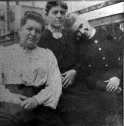

Here's a photograph of Mary Elizabeth (Lizzy) nee Mills COOK (left) and Fannie nee Mills MCDANIEL (right). I believe the older woman in the middle is their mother, Dorcas nee Webber MILLS, on the basis of a strong family resemblance with her daughter Lizzy that is even more evident in other photographs. The inscription, by Lizzy's daughter-in-law, Laura Adell nee Breitkreutz COOK, reads "Ralph's mother and friends."
Last updated on 26 Oct 1998